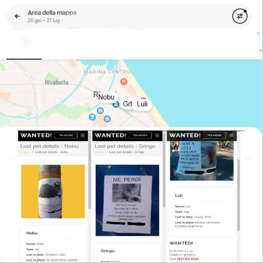

Further developments of the project include the forthcoming release of new tools and merchandising conceived to improve the users interaction and engagement as well as to assure the project sustainability.
To achieve these goals, the creation of a network of partnerships and/or sponsorships with economic and cultural related realities will be welcomed. These relationship will also increase the project visibility and the possibility to have social media adertising revenues - an example have been shown in the Sofia scenario.
Some of our proposal are illustrated in the Forthcoming section and briefly listed below:
Search for your pet application
Search for your pet is a tool able to help people who lost their pets by loading, sharing, and visualizing geolocated data of their missing pets. The user will have the possibility to fill in a form that will structure data similarly to those seen in the Preliminary data section; other users could improve information in case they have seen the lost-pet.

{kind=link}
Funny merchandising - 3d print your pet
The idea is to develop a tool to realize a 3d printed little modelling of our pet, starting from uploading a 360° video. The merchandising unit will be in charge to realize and send home to the users the realized 3d print that will be used as a gift or a little celebrating statue.
Funny merchandising - Panini Trading cards and album
Starting from the strong tradition of the Panini Trading cards and album, already offering personalized products from their website and applications, we thought to realize a Panini Trading cards and album Wanted! edition.
Looking for the missing card among other passionated will improve engagement and experience sharing.
{kind=link}
Educational merchandising - Memory and Guess Who? board games (and online versions)
Scientific literature shows that board games and their online versions, are useful tool to improve learning ability and social interaction rate. This is why we would like to propose a Wanted! edition for two traditional board games that have been declined in the years in several versions (Star Wars ed., Disney ed., etc.).
{kind=link}
{kind=link}